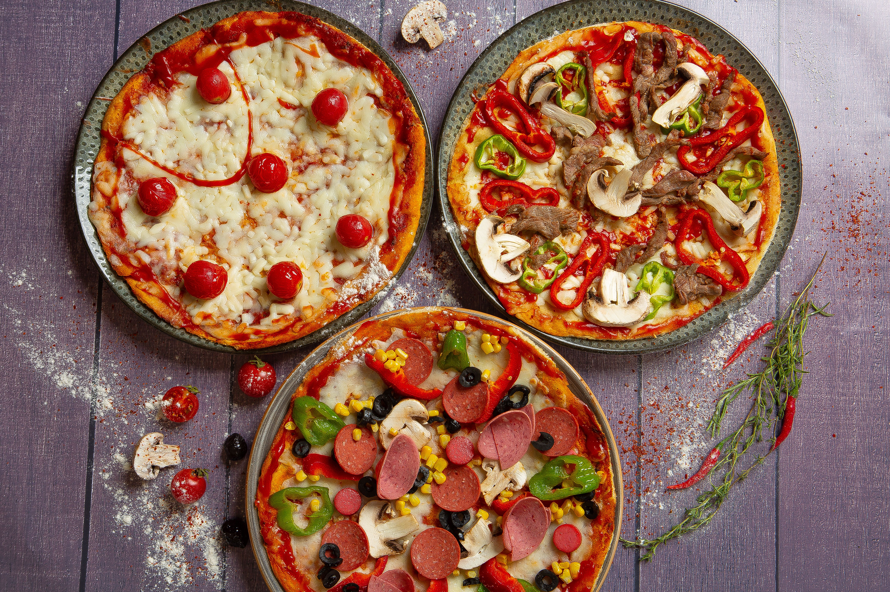
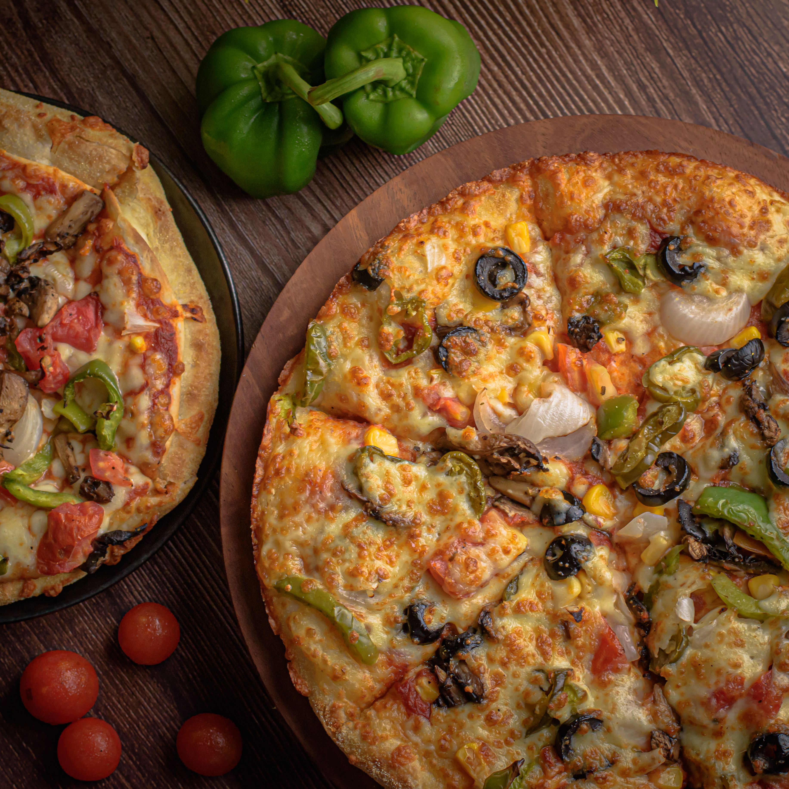
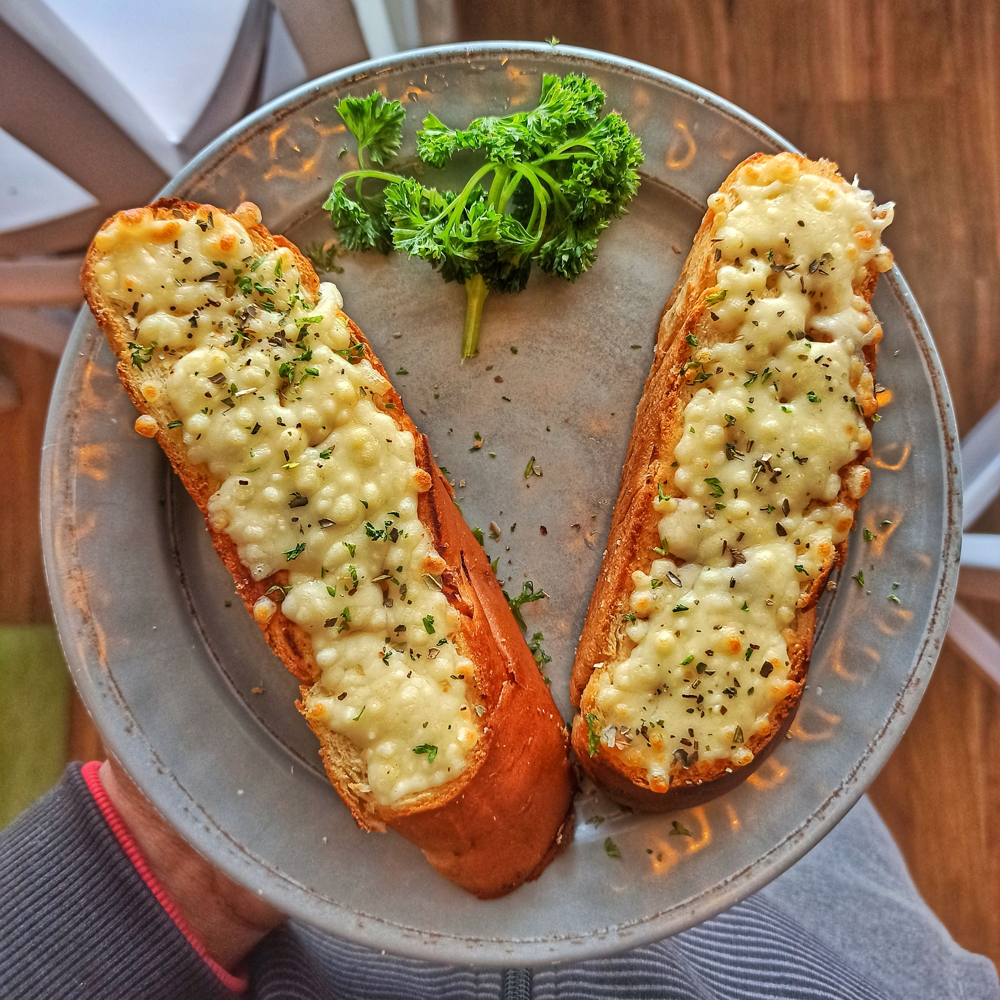
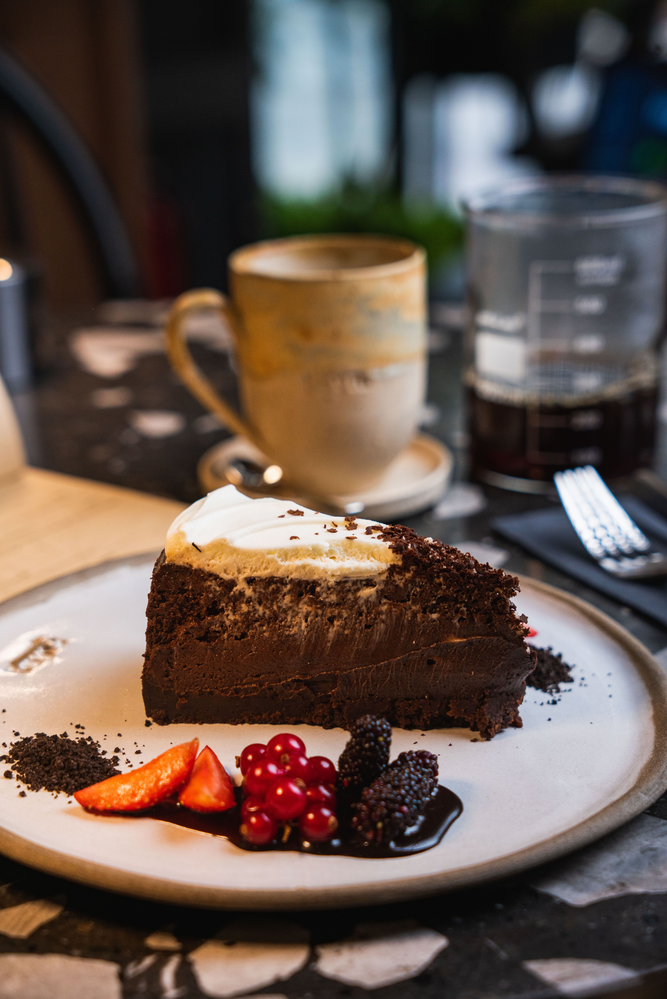
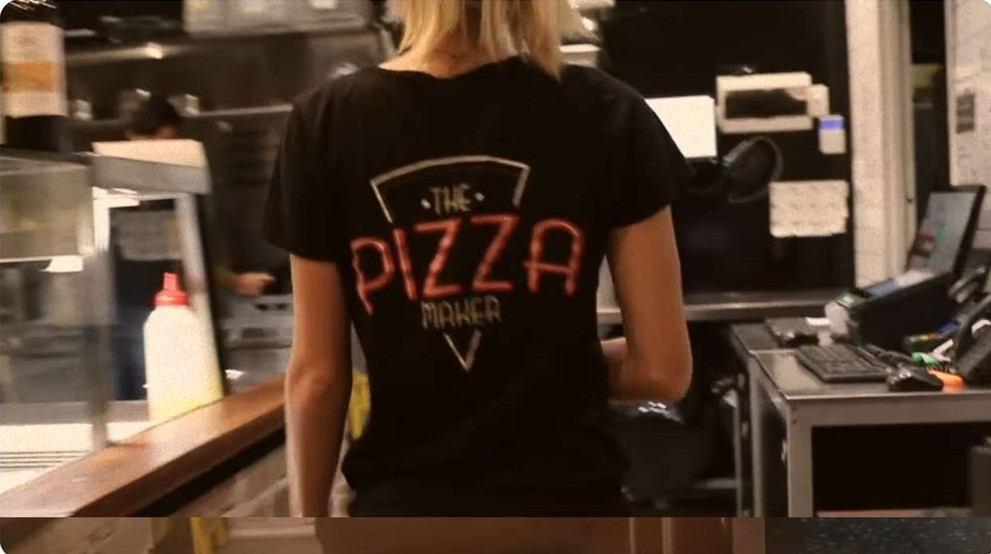
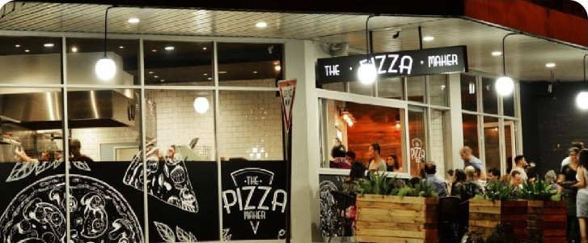
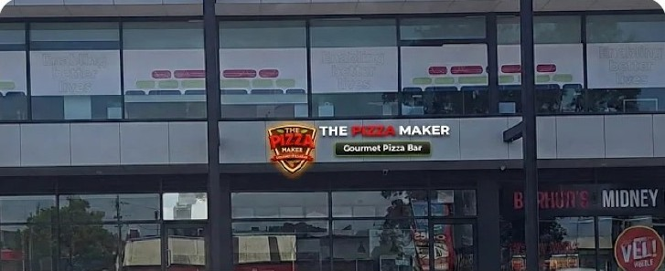
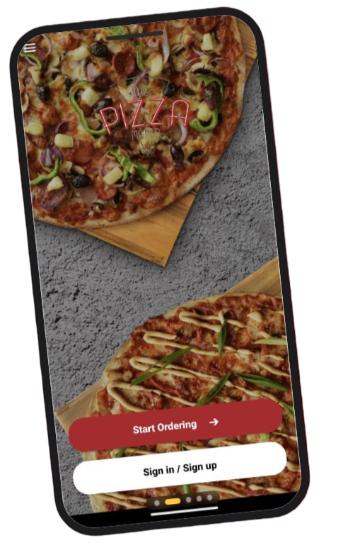
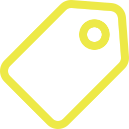

TOP DEAL
FEAST DEALS
Unbeatable combo offers and family feast bundles.
Explore DealsFresh Pizza, Pasta, Sides and More. Crafted daily using signature sauces, premium toppings and fresh local ingredients.Now serving Petersham & Werribee!
Order from Petersham Order from Werribee
Unbeatable combo offers and family feast bundles.
Explore Deals
From traditional favourites to gourmet creations.
Explore
Rich, comforting and cooked fresh to order.
Explore
Fresh, crisp and full of flavour.
Explore
Perfect sides for any craving.
Explore
Indulgent sweets to complete your meal.
ExploreOur pizzas and meals are prepared fresh using quality ingredients and house-made dough every single day.
Full-flavoured pizzas with satisfying, generous portions of fresh meats and cheeses in every order.
Signature sauces, slow-marinated proteins, and carefully selected herbs for great unmatched taste.
Convenient,fast online ordering from our Petersham (NSW) and Werribee (VIC) store locations.
Proudly baking fresh, delicious pizzas with signature dough, quality ingredients and passion since 2013.


"Had their pizza before and it was great. Tonight I tried to order online but was having difficulties. So I rang and the phone was answered asap. That's change. Explained to guy who answered phone.."
"I absolutely love this local pizza store. They have so many unique pizza flavours! which i cant wait to try more! i got the spicy pizza and it was so good!"
"Great job. I had two pizzas and they came out quickly. They tasted amazing. I highly recommend this place."
"Got the Meatlovers and Prawn gluten-free pizzas. It was delicious! coeliac safe too. The staff there are really friendly. Defs going back again."

Shop 1/121-123 New Canterbury Road, Petersham NSW 2049
02 9568 4414
Order Now Call Now Directions
2/54 Synnot Street, Werribee VIC 3030
03 8001 7555
Order Now Call Now Directions
Download now for $10 off your first order! Use code APP10.You can Order ahead, skip the queue and earn exclusive rewards with every purchase.
Please read the Terms and Conditionsfor all other active promotions.

Exclusive App-Only Deals